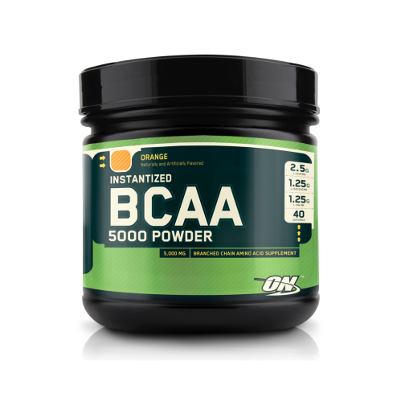
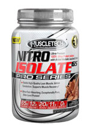
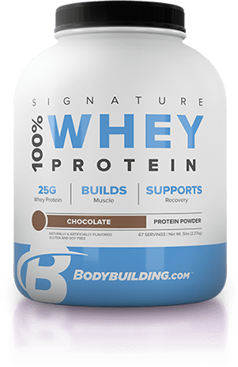
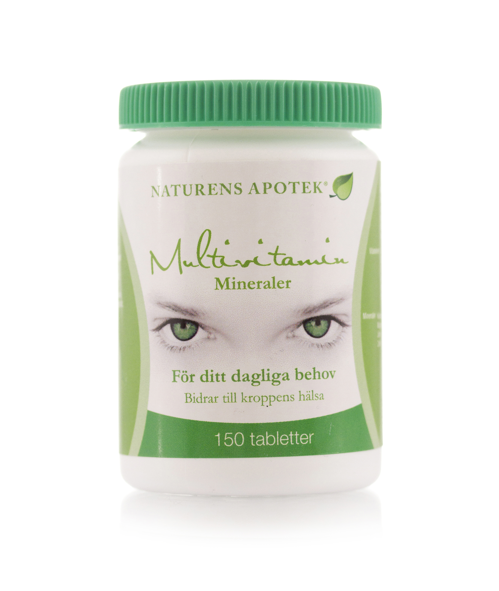
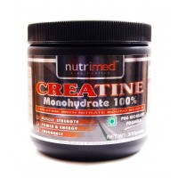

Nos Produits
BCAA en poudre Xtend

Xtend Hydrasport est une formule composée de BCAA en poudre, fabriquée par la marque Xtend.
Les BCAA (acides aminés ramifiés) sont des acides aminés dits essentiels
qui ne peuvent pas être synthétisés naturellement par le corps et qui doivent être apportés par
l'alimentation et plus particulièrement par la prise d'un complément alimentaire.
Prix: 30€ l'unité
En savoir plus
Ajouter au panier
BCAA en poudre Optimum Nutrition

BCAA 5000 powder est une formule composée de BCAA en poudre, fabriquée par la marque Optimum Nutrition.
Les BCAA (acides aminés ramifiés) sont des acides aminés dits essentiels
qui ne peuvent pas être synthétisés naturellement par le corps et qui doivent être apportés par
l'alimentation et plus particulièrement par la prise d'un complément alimentaire.
Prix: 25€ l'unité
En savoir plus
Whey Muscletech

Nitro Isolate de la marque MuscleTech est une protéine en poudre composée principalement de whey isolate.
Ce complément alimentaire a été développé dans un seul but: vous aider à développer
votre masse musculaire et augmenter vos performances lors de vos séances de musculation. Cela est
possible grâce à une formule complète qui a été développée en se basant sur des études scientifiques et des tests en laboratoires.
Prix: 70€ l'unité
En savoir plus
Whey Bodybuilding.com

100% Whey protein de la marque Bodybuilding.com est une protéine en poudre composée de whey.
Ce complément alimentaire a été développé dans un seul but: vous aider à développer
votre masse musculaire et augmenter vos performances lors de vos séances de musculation. Cela est
possible grâce à une formule complète qui a été développée en se basant sur des études scientifiques et des tests en laboratoires.
Prix 50€ l'unité
En savoir plus
Multivitamines

Multivitamin Mineraler de la marque Naturens Apotek est composé de plusieurs vitamines et minéraux.
Ce complément alimentaire a été développé dans un seul but: aider à maintenir la
forme physique et éviter les carences en cas de régime. Ce complément est
pour les athlètes et sportifs souhaitant garder la forme quoi qu'il arrive.
Prix: 20€ l'unité
En savoir plus
Créatine en poudre

Creatine Monohydrate 100% de Nutrimede est un complément alimentaire qui est composé de créatine monohydrate micronisée en poudre.
Cette formule a pour vocation d'accompagner les sportifs dans l'augmentation
de leurs apports journaliers en créatine. Creatine permet d'améliorer les capacités physiques
lors de vos entraînements si vous réalisez des series successives de courte durée et à forte intensité. Cette amélioration s'obtient par une consommation quotidienne de 3g de créatine.
Prix: 30€ l'unité
En savoir plus